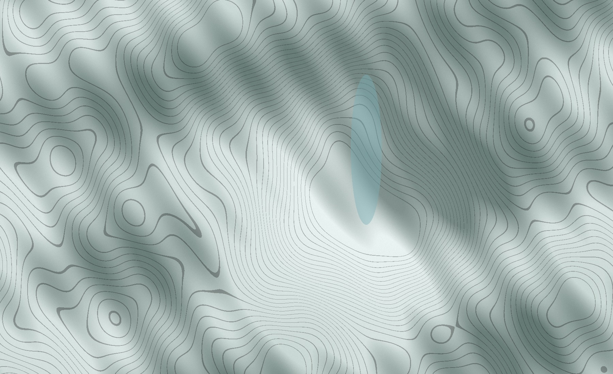

北稜山地 / 架空の遠征マップ
RIDGE
まだ見ぬ稜線へ。
選んだ遠征
雲上の稜線
12.8km / 距離
6.5h / 行程
尾根の起伏をたどり、空に近い展望地へ。
現在の地点1,680 m出発 / 白樺ベース
遠征ノート
風景をつなぐ、
風景をつなぐ、
小さな一歩。
地形の形と、高度の変化を読む。ルートを切り替えて、違う山の表情を探してください。
- 出発白樺ベース1,680 m
- 中間風の肩2,350 m
- 到着雲上の展望台2,860 m
雲上の稜線、出発地点を表示しています。